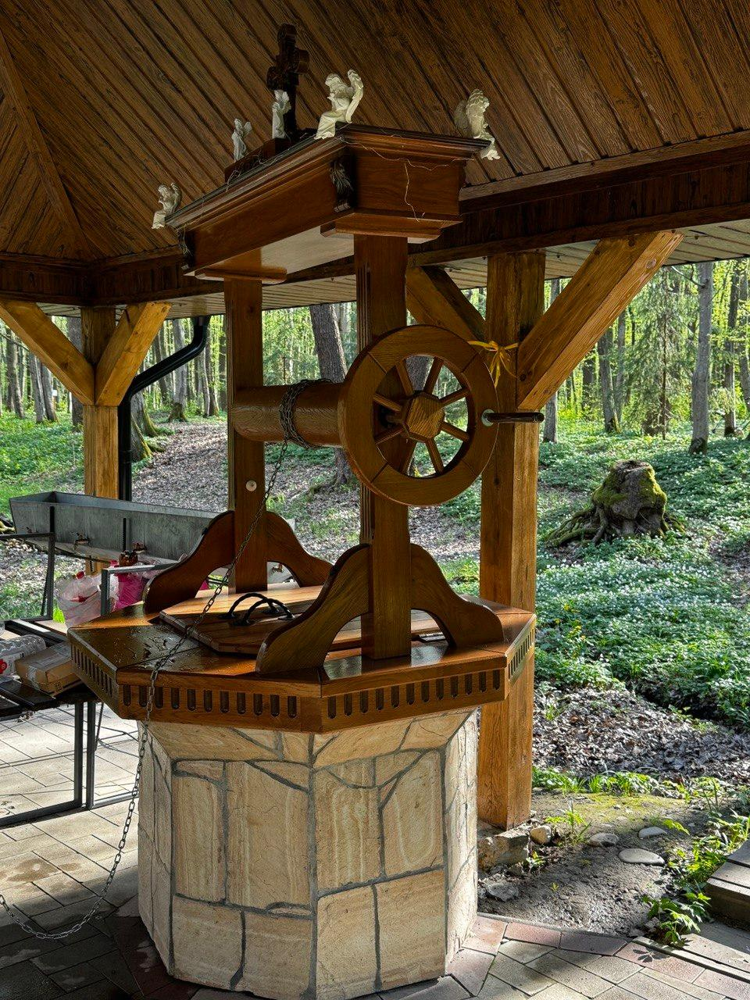
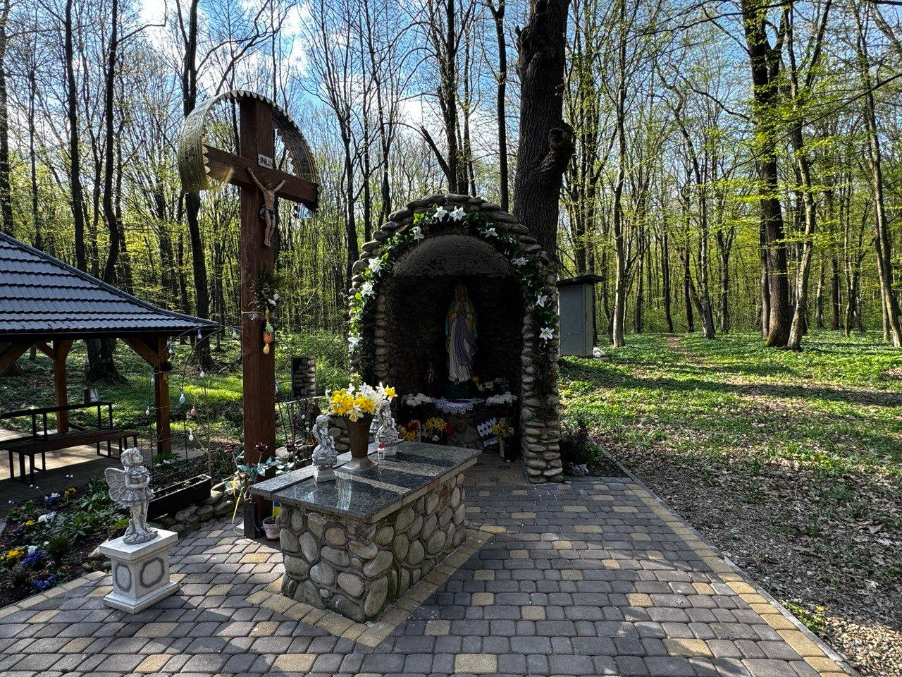
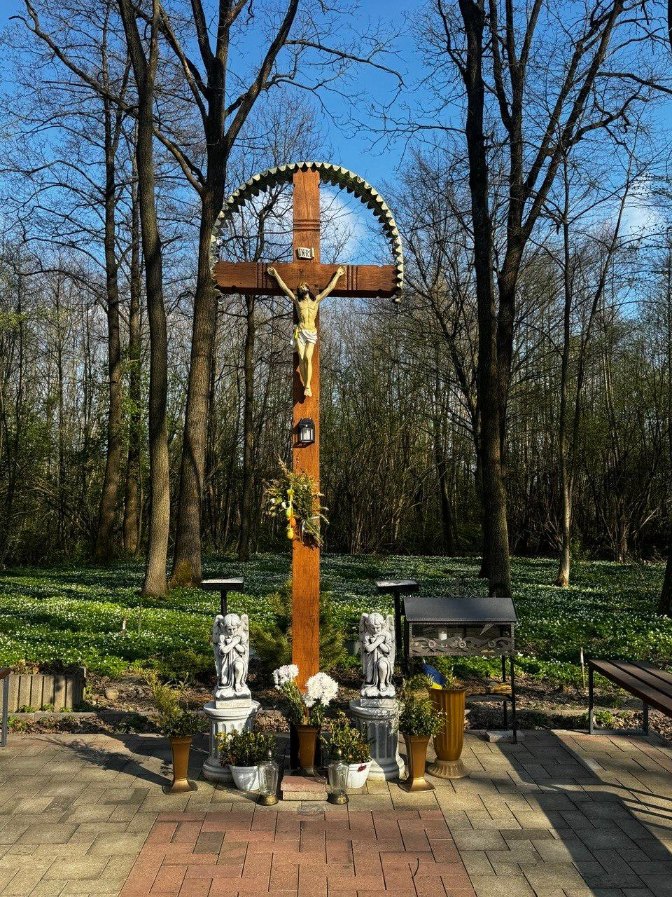
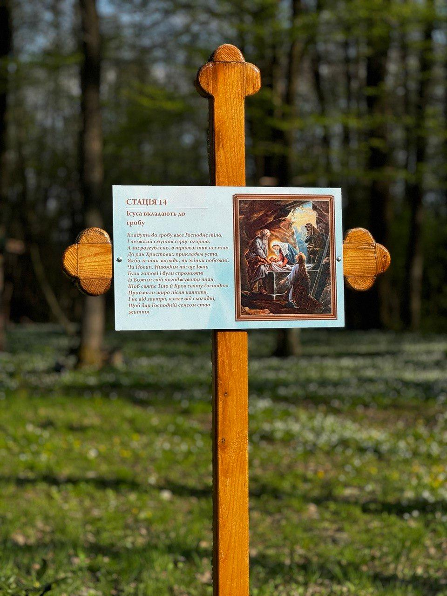
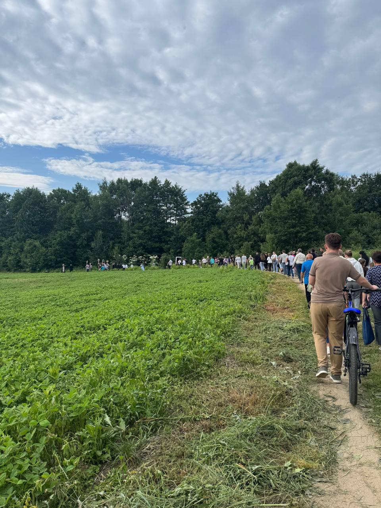
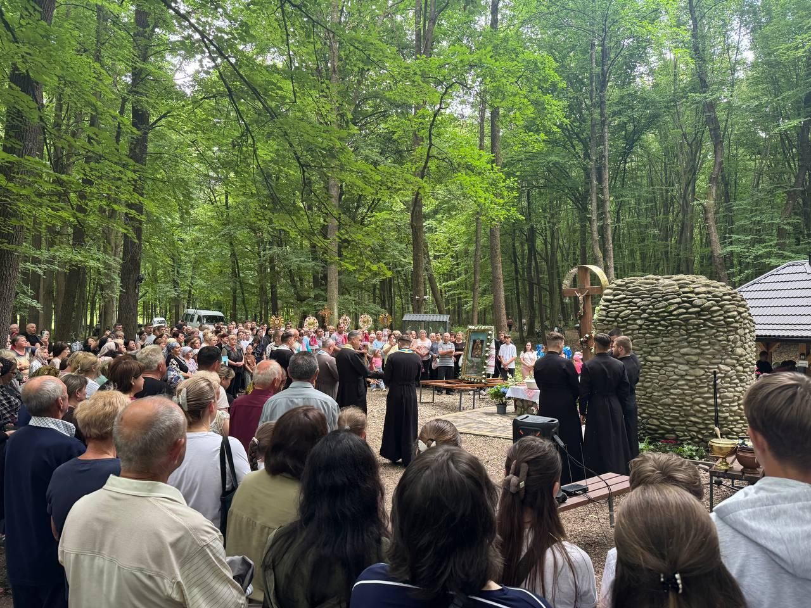

Урочище «Монастир» — це історична назва місцевості, яка збереглася в пам'яті жителів села Липівка протягом багатьох поколінь. Саме так липівчани називають лісову місцевість, де колись знаходилися дерев'яна церква Воскресіння Христового та чоловічий Свято-Троїцький монастир. Назва урочища походить саме від монастиря, який діяв тут у 1711–1724 роках. Про існування цієї обителі згадує український історик Іван Крип'якевич.
Близько 1700 року було збудовано та освячено дерев'яну церкву Воскресіння Христового. Саме вона стала духовним осередком місцевої громади. Після закриття монастиря храм було розібрано та перевезено до центру села Липівка, де він зберігся до наших днів як пам'ятка сакральної архітектури та живий свідок багатовікової історії парафії.
Урочище «Монастир» і сьогодні залишається особливим місцем молитви та паломництва. Тут знаходиться монастирське джерело, вода з якого здавна вважається цілющою, особливо при захворюваннях очей.

Саме з цим джерелом пов'язано багато місцевих переказів, а також історія чудотворної ікони Божої Матері «Одигітрія», яка, за народною традицією, тричі поверталася до цього святого місця. Поруч із джерелом встановлена фігура Пресвятої Богородиці, біля якої паломники та парафіяни збираються на спільну молитву.

Протягом багатьох років на місці, де колись стояла дерев'яна церква Воскресіння Христового, височів пам'ятний хрест, який нагадував про давню святиню та монаше життя. В останні роки урочище «Монастир» переживає особливе духовне відродження. На місці давнього хреста було встановлено великий й хрест, який став видимим символом віри та пам'яті про історичне минуле цього місця.

Крім того, саме на місці колишньої монастирської церкви було споруджено нову каплицю, яка стала осередком молитви для численних прочан і парафіян.
Особливою окрасою урочища є Хресна дорога, прокладена мальовничою лісовою стежкою.

Проходячи її стаціями, вірні мають можливість у тиші природи роздумувати над страстями Господа нашого Ісуса Христа, поєднуючи молитву з духовним переживанням історії спасіння.
Щороку, у переддень свята Різдва святого Івана Хрестителя, до урочища вирушає урочиста процесійна хода з чудотворною іконою Божої Матері «Одигітрія».

Тут звершується молебень до Богородиці моління за участю духовенства, парафіян і численних паломників, які прибувають, щоб помолитися біля монастирського джерела та вклонитися місцю, з якого бере початок історія парафії.

Сьогодні урочище «Монастир» є не лише пам'яткою історії, а й живим духовним центром, який поєднує минуле із сучасністю. Воно нагадує про багатовікову історію Липівки, подвиг монашої спільноти, давню дерев'яну церкву Воскресіння Христового та неперервність духовної традиції, що зберігається і передається новим поколінням.